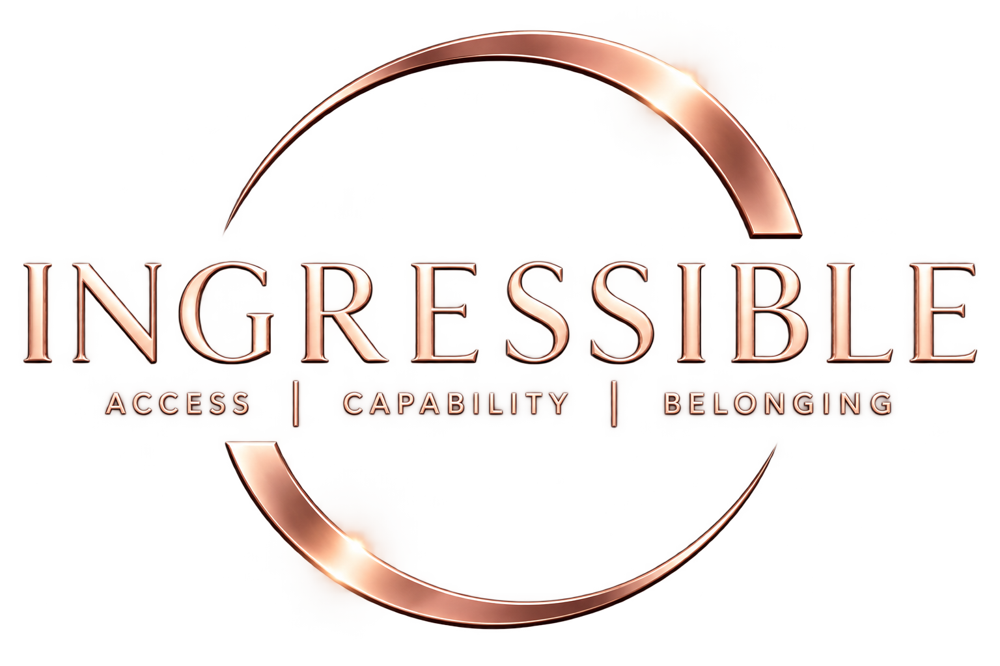

Kechi Shellian Boniface | Founder of Ingressible LLC
Preserving the vision. Expanding the experience.
Through Ingressible, I help beauty brands and retailers expand participation across products, packaging, digital experiences, and in-store customer journeys. I also bring accessibility testing, training, and leadership expertise to organizations seeking W2 or contract support.

The approach behind Ingressible
Preserving The Vision. Expanding The Experience.
Your vision has a personality, a purpose, and details worth keeping. Preserving the vision means understanding what makes your product, service, or digital experience yours and respecting that intention throughout the work.
Expanding the experience means examining what people need to enter, understand, use, and participate. That might mean clearer website navigation, an app that works with a screen reader, packaging that is easier to open, or more ways to explore a store independently.
Through testing and collaboration, Ingressible helps you keep what works, understand what gets in the way, and explore practical improvements. The goal is to give more people the capability and freedom to experience your vision in their own way, with room to feel included and belong.
How I read an experience
Explain What Matters
Understand what works, what gets in the way, and what could come next.
What supports participation well and deserves to be preserved. Strength is never an excuse to stop looking; it is the foundation worth carrying forward.
- Observed
- Measured
- Expert Tested
- User-Informed
What deserves examination, clarification, or monitoring. A consideration is not yet a barrier — it is a signal worth watching before it hardens.
- Observed
- Research Needed
What meaningfully interferes with participation. Barriers are described precisely and honestly, with the evidence that supports each finding.
- Measured
- Expert Tested
- User-Informed
Where a practical improvement could expand the experience. Opportunities are brand-informed and realistic — nothing that asks a brand to abandon its own identity.
- Observed
- Expert Tested
Where a new approach deserves exploration. Innovation is named as direction, never as promise — and it is always scoped openly with you first.
- Research Needed
- User-Informed
Evidence is independent. Recommendations are brand-informed.
Sample deliverable
A closer look at a product
Every assessment closes a loop: context, scope, methods and limitations, evidence, findings, recommendations, and next steps. Findings stay independent. Recommendations respect your brand’s intention.
See how work is structured-
Map the brand’s vision, materials, claims, packaging, digital touchpoints, and stated design intent. Keep the brand’s vision intact.
-
Record the distinct moments of the experience — opening, dispensing, application, storage, and everyday use — as they are currently designed.
-
Interpret what happens at each moment: what works, what gets in the way, and what could come next. Distinguish friction from frustration from exclusion.
-
Locate where a person is cut off and why. Classify each finding as Strength, Consideration, Barrier, Opportunity, or Innovation.
-
Explore improvements across materials, structure, packaging design, digital, and retail — without pulling the brand’s personality out.
-
Recommend practical, brand-informed next steps. Findings stay independent. Recommendations respect the brand’s intention.
-
Retest improved versions against the original findings and state what changed. The loop closes only when evidence is updated.
Consulting services
What Ingressible offers
Six services, one thread: preserving what makes a beauty experience distinct while expanding who can meaningfully participate.
-
Product & Packaging Accessibility
Opening, closures, grip, handling, identification, dispensing, application, instructions, storage, and everyday use.
-
Retail & Customer Experience
Discovery, displays, navigation, testers, sampling, consultation, purchase, pickup, support, and omnichannel journeys.
-
Digital Accessibility
Websites, ecommerce, mobile, forms, content, customer support, documents, remediation guidance, and retesting.
-
Prototype Development & Testing
Concept review, hands-on assessment, design alternatives, collaboration, version comparisons, and retesting.
-
Training & Advisory
Role-specific training, demonstrations, document guidance, working sessions, office hours, and ongoing support.
-
Research & Inclusive Innovation
Research reviews, opportunity mapping, question development, and participant-informed work when explicitly scoped.
The beauty experience
Explore the beauty experience
Every moment with a beauty product is a doorway. Choose a stage to see what Ingressible examines there.
The invitation
Discover
How a product makes itself known, and how easily a person can find, reach, view, and pick it up — on the shelf, online, or in between.
Discovery, navigation, information, display, sampling.
The threshold
Open
What it takes to get inside. Closures, seals, caps, pumps, and the precise moment a product stops being inviting and becomes frustrating.
Opening, closures, grip, seals, first touch.
The ritual
Apply
How a product moves from container to skin. Dispensing, messaging, texture, application, and whether instructions turn intent into ease.
Dispensing, application, instructions, everyday use.
The belonging
Enjoy
Where experience becomes ritual and ritual becomes belonging. Storage, travel, reuse, restocking, and the quieter moments of affection for a product.
Storage, ongoing use, loyalty, shared moments.
Two ways to work together
Choose your path
Work with Ingressible
Beauty brands and retailers — assessments, training, advisory, and inclusive innovation across products, packaging, retail, and digital experiences.
Start a ConsultationExplore my professional experience
Recruiters and employers — accessibility leadership, digital and mobile testing, document accessibility, training, and cross-functional collaboration for W2 or contract roles.
View my experienceLet’s talk about your next experience.
Whether you are building a product, an experience, or a team — the conversation starts here.